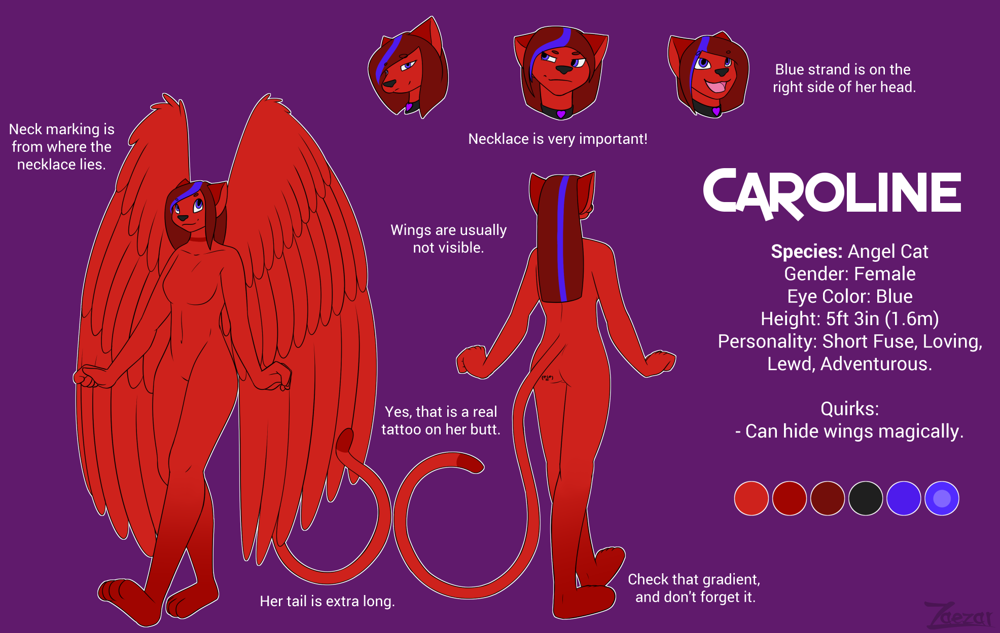

Caroline (Fursona)
Caroline is my fursona. If you didn’t know, I’m a furry. And you can read about what that is at WhatAreFurries.com.
TL;DR, I like animals that stand upright like Bugs Bunny. (Anthropomorphic animals, or “anthros” for short.)
A fursona is one’s anthropomorphic counterpart, their main “OC” (original character), the one that best represents their real-life identity. (There is always discourse about this definition, but it’s the one I believe in and live by.)
Adolescence
Caroline started out as what I liked to call my “ideal woman” back when I wasn’t very in-touch with my identity. At the time, I didn’t know my sexuality, didn’t have a firm grasp on my ideology, and I was certainly out of touch with my gender-identity! In short, I was young, and still finding myself.
Gaming
I have always used Caroline as my in-game character whenever customization is possible in a video game. Years of practicing taught me exactly what I wanted her to look like:
- (Obviously), she is female
- Where possible, she always has cat-like features, or is a cat race (such as a Khajiit) (This takes priority over colour features, if it becomes a limitation.)
- She always dresses in red, as it was my favourite colour for a long time. (Now it’s purple.)
- She has red hair for similar reasons
- She has blue eyes because they were always the prettiest to me
- She has a slightly pointed jaw
This is my first drawing of her, from around that time:

My first game
When I started making my own game, Basuoland, I chose to insert her into that game too. You might have noticed, this is a bit of a problem. I cannot bring myself to make new characters. So I always insert this same character into any given scenario.
(cont. on Basuoland: Characters)
Self-Realization
Slowly, over the years, I grew as a person. I learned about trans people, and broke out of my shell. I admitted to myself that I was trans. I was always cautious about it, and still am to this day. Because I know that there are hateful people in the world, and some of them are in my own family. My fursona, at this point was an idealized version of myself, and continues to be to this day.
The character designer
Up to this point, I still did not have a concrete representation of my fursona. Some people in the furry community offered to draw her for me, but I never had a clear idea of what she should look like.
Enter: Zaezar, the profession character designer, and furry artist.
I discovered Zaezar on YouTube, where he had a series of tutorials about drawing anthros. I followed him on Twitch for some time, and became a regular member of his community.
One day, I came into a larger-than-usual amount of money and decided (regretably) to commision him with it. (The reason for the regret is not because of the quality of the work, but because I should not have spent that money. It was for food that month, as I later found out.)
He drew this amazing reference image for my character, and I was super excited to see it. He drew it oh his livestream, so I got to watch and weigh in on every detail. He helped me decide which features were good to keep, what should be added to make it more interesting, and which ones should be changed, to look nicer.
In the end, he came up with this, and I love it:  I haven’t been active in his community for a while, but I still love his art.
Check out the art gallery!
After this, I commissioned more art of Caroline whenever I had the money. And you can see more examples of them in the art gallery section of this website!